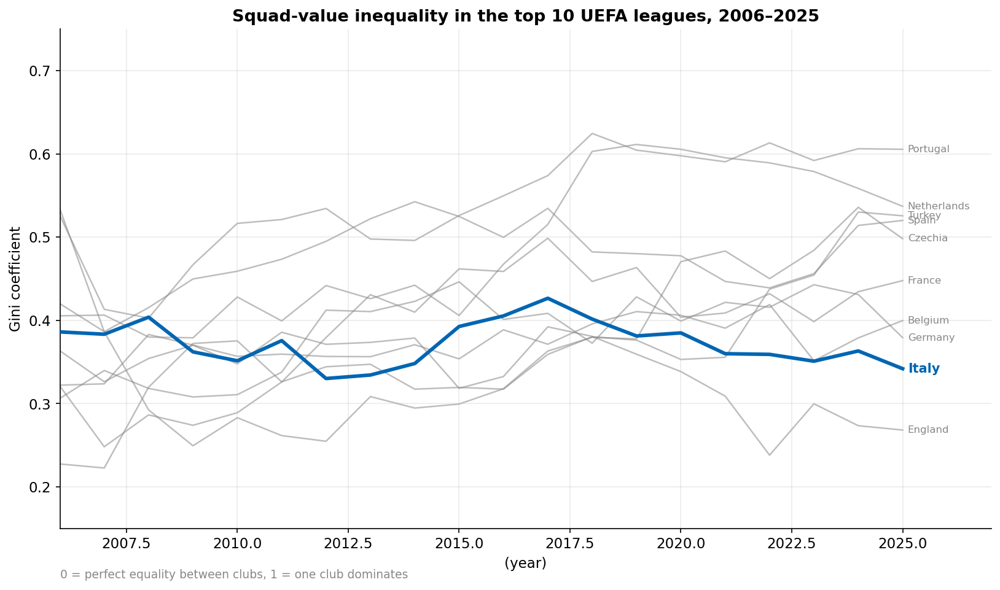
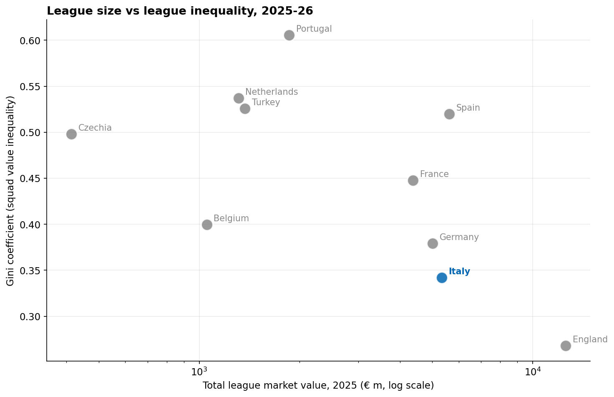
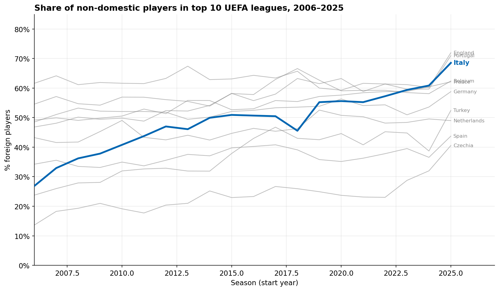
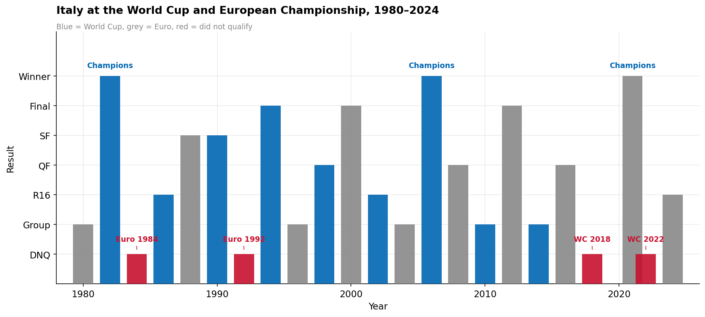
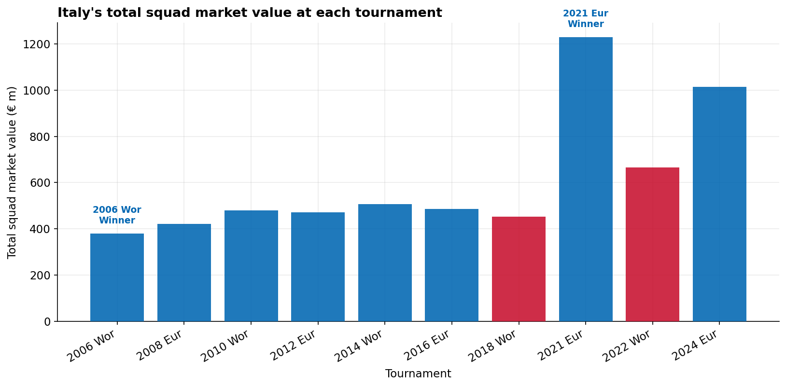
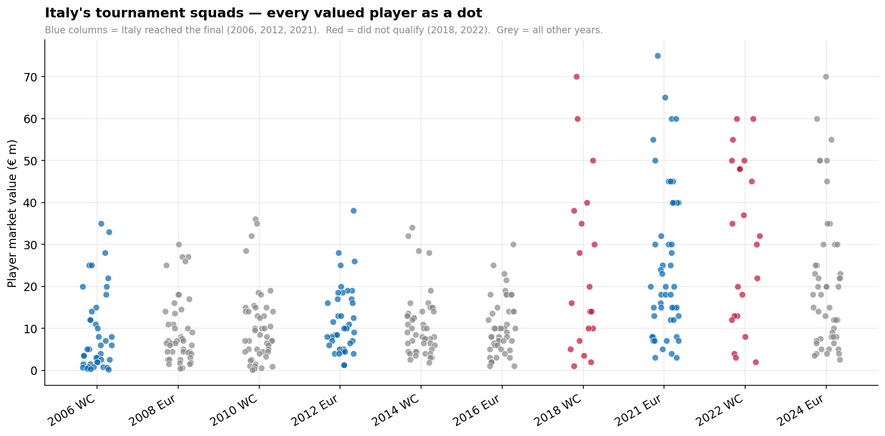

Model 1
· β = -0.0082, p = 0.84
Diego Fasano · BEE2041 · University of Exeter, May 2026
A data story of Serie A’s international decline and why the numbers complicate the narrative.
The 4 time world champion Italy has not qualified for a world cup for the third time in a row, a truly unobserved event in the history of football. A popular narrative portrays this failure as the inevitable consequence of Serie A’s “inequality” and “flooding with foreigners”. But what does the data say? In this post, I build a dataset of club market values and tournament squads to investigate these claims.
I analyse two main “lenses” on the problem: 1) the Gini coefficient of club market values within each league, and 2) the share of foreign players in each league. I then look at Italy’s actual tournament performance and squad composition, and run some simple regressions to see if the data supports the popular narrative. The regressions run on a small data set, it is therefore important to interpret them as exploratory and descriptive rather than causal or predictive. With that said, the results do challenge the popular narrative in some interesting ways, and suggest some alternative explanations for Italy’s decline.
The Gini coefficient is a common measure of inequality, where 0 means perfect equality (all clubs have the same market value) and 1 means perfect inequality (one club has all the market value). If Serie A is more unequal than other leagues, it could mean that a few clubs dominate the league and hoard the best players, leaving less talent for the national team. As public pressures impeded the selction of vast amounts of players from the same squad. But how does Serie A compare to other European leagues, and how has its Gini coefficient evolved over time?

Italy sits in the lower end of the pack in terms of Gini, and has only slightly become less equal since 2006. It has an inital Gini of ~0.39, similar to Portugal, but has a much lower final Gini than Portugal, the second lowest in the pack. Clearly, the narrative: Italian football has become more unequal and that is why the national team is doing worse, is not supported by the Gini data. In fact, Italy has been one of the most equal leagues in Europe for the past two decades. The scatter plot in Figure 5 also shows that there is no clear relationship between league size, total market value, and Gini coefficient. Italy has a moderate total market value, but its Gini is among the lowest. This suggests that other factors besides inequality may be driving Italy’s decline on the international stage.

This provides a better idea of the landscape of Gini Coefficients across European leagues, and shows that Italy is, an outlier in terms of inequality, but not in the direction which would satisfy the narrative. Plotting the Gini coeffiencients agaisnt total league market value does however show a negative reletionship between the two, which could suggest that more unequal leagues are also less valuable overall, but this is a very tentative observation and would require more analysis to confirm.
Another common claim is that Serie A has too many foreign players, which supposedly harms the development of Italian talent and weakens the national team. To evaluate this claim, we can look at the share of foreign players in each league over time. If Serie A has a higher or faster-growing foreign-player share than other leagues, it could lend some support to the narrative. But what does the data show?

This set of data actually works with this narrative, Italy starts with the 3rd lowest percentage of foreign players (26.9%) in 2006, but then has the fastest growth in foreign share (+41.7pp vs an average of +17.8pp), ending up with the 3rd highest percentage in 2025 (68.5). This could suggest that Serie A has indeed become more “flooded” with foreigners, and that this may have contributed to Italy’s decline. However, it is important to note that correlation does not imply causation, and there could be other factors at play. For example, the increase in foreign players could be a symptom rather than a cause of Italy’s decline, or it could be driven by broader trends in football such as globalization and commercialization. Therefore, while the foreign-player share data is consistent with the narrative, it does not prove it.
Now that we have some context on the league-level trends, we can zoom in on Italy’s actual performance in international tournaments, and the composition of their squads. This will help us see if there are any patterns or insights that can be gleaned from Italy’s results and squad values, and how they relate to the broader narratives about inequality and foreign players. I assign each tournament result a simple performance score from 1 to 7, where 1 is 'not qualified', 2 is 'group stage exit', 3 is 'round of 16 exit' and so on. This allows us to quantify Italy's performance over time and see if there are any trends or correlations with the league-level data we discussed earlier.



Italy’s tournament performance has been on a general decline since the mid-2000s, with the 'peak' being the failure to qualify for three consecutive tournaments. Amid all of this it managed to win the 2021 Euros, how this happened is truly unexplained... or is it? Italy's squad market seems to have increased in value over time, however this is likely due to the general inflation of player market values in recent years, rather than an actual increase in the quality of players. However it is interesting to note that the 2021 Euro-winning squad had by far the highest swuad value of any tournament. This could suggest that multiple players peaked in performance at the same time, which could have contributed to the unexpected success.
The reality check? Is it possible that player values increase when they win a majour international tournament, rather than the other way around? This would suggest that the high squad value in 2021 was a consequence of winning the Euros, rather than a cause.
Furthermore Figure 4 does a great job at showing the distribution of player values within each squad, and how this relates to performance. It not surprising therefore that the 2021 squad has one of the largest variances, with a few very valuable players affecting the value.
The final step I took involves running regressions, however, as explained before, the sample size is small, too small to even start talking about a causal effect. The point is to ask weather the structural story even leaves a trace. I run regressions of tournament performance against three variables:
If the narrative that more foreign players results in a weaker Azzurri side is right, the coefficient should be negative, indicating a higher percentage of foreign players in domestic sides does in fact result in a worse national team as little space is left for Italian players to grow and be noticed locally.
This regression tries to understand if a valueable team truly results in a better international performance. Players are however often heavily valued based on the club and league they are in and not just on ability level. The coefficient should be positive, indicating a positive performace return to higher valued players.
The Azzurri's perfomance has steadily declined, but is focusing on one team the right thing to do? Have other international teams had the same increase in international players without experiencing a fall in perofrmance? This regression looks into the gap in foreign players between the nations.
· β = -0.0082, p = 0.84
· β = 0.0032, p = 0.19
· β = 0.0037, p = 0.954
Model 2 is the only slightly instructive one. Squad value has a largest, but still non-significcant positive sign of the 3 models. This is mildly reassuring: better squads do better, is a sanity check that the pipeline passes, however the explicitly structural variables do not. Model 1 and 3 have a p-value of over 0.8, extremely far away from the desired 0.05, this is the result of a very small sample size among larger problems like reverse causality, bias and even the fact the performance score is ordinal.
The only honest read is that, in the 2006-2024 window, we can see, neither Seria A's level of wealth concentration nor its foreign share predict the disastrous tournament outcomes in a statistically meaningful way. The ongoing international failures happen against a backdrop of decreasing domestic percentages, but so does the 2021 Euro win. The Gini Coefficient for the Serie A did peak in 2018 but has since retreated, and is overall among the lowest in the top 10 leagues.
Unfortunately no matter how the narratives are spun there is no evidence that Italy would have qualified, the failed qualifier squads are not conspicuously shallow, maybe it was bad luck.
This is a useful finding. A lot of recent football commentary assumes a mechanism so obvious that it doesn't seem to need testing. However when you do the test, you find that the variables pointed at, the ones first blamed, are, empirically, weak predictors. Clearly soomething else: coach selection, youth development, playoff variance and location or even the starting defenders not receiving a red card in the 41st minute of the first half- is doing the work.
All data, notebooks, and figures are in the
GitHub repository
Run the four notebooks in order:
01_scraping → 02_cleaning → 03_eda → 04_modelling.